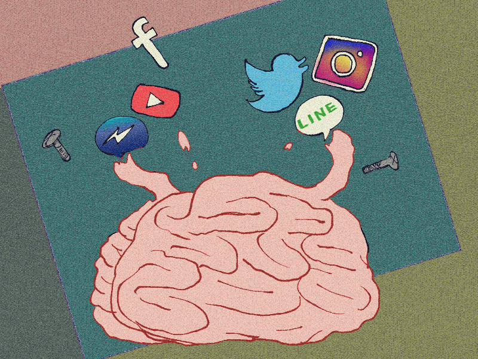

6月12日〜22日までの約10日間、一定の期間をオフラインで過ごしてきた。
まず１つ思ったことは不便すぎると言うこと。
自分は常に携帯を持ち運んでる身なのでオフラインの環境がまず理解出来なかった。でも、いざオフライン環境元に居て震災が来たらこんな感じなんだろうな。と、もっと改めて生活しないといけないなと考えた。
震災時のオフライン状態、すなわち電波環境を調べてみて分かったことは必ずしも電波が通じなくなるわけでもないようで、携帯会社や機種によって差があるようだった。
ユーザーの多い会社は繋がりにくいのは承知の上で唯一比較的繋がりやすかったのは当時使われていたウィルコムだったらしい。ユーザーも少ない半面、他の回線とは違うPHS回線を使っていたため他の機種と比べて電波や電話の繋がりにさほど支障はなかったという。 これだけ見れば貸し借りなどでどうにかできそうだがユーザー数の関係で上手くいかなかったのだろうか。